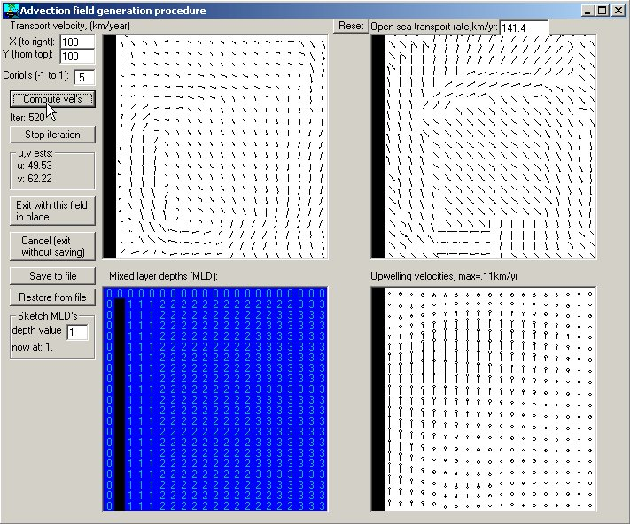

Advection fields can be read from text files. The procedure for this is as follows:
Create a .txt file, (e.g., in Notepad) with the following structure:
Number of columns in Ecospace basemap (nRow) ; Number of columns in Ecospace basemap (nCol)
Number of Months
(For each of the months specify the following:
Month Number
(For this month specify for 0 to nRow + 1, and for 0 to nCol+1, unit: m/s)
Current X-velocity, Current Y-velocity
(Repeat this for all months)
Currents for the Central Pacific may be obtained in a suitable format from http://www.oscar.noaa.gov/datadisplay/index.html)

Figure 4.4. Ecospace advection model interface